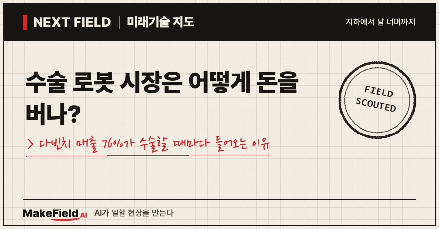
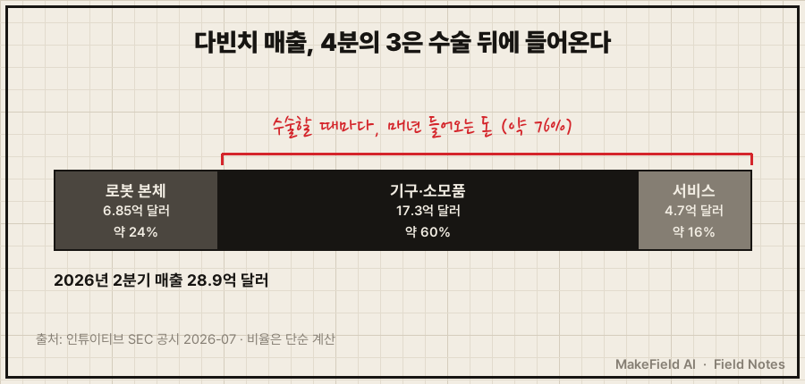
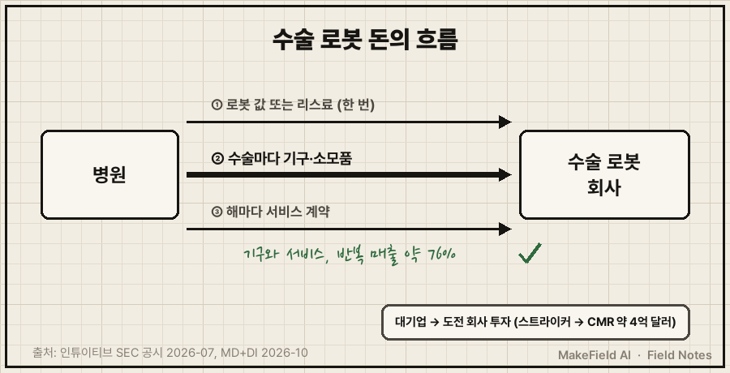
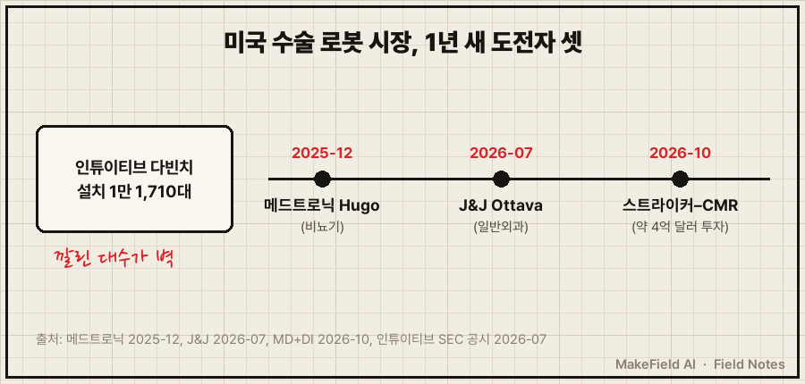

수술 로봇 회사가 정말로 많이 파는 건 로봇 본체가 아니에요. 수술 한 번이 끝날 때마다 다시 사야 하는 로봇 팔 끝의 가위·집게, 그리고 해마다 내는 유지보수 계약이 매출 대부분을 만듭니다.
한 줄 요약: 세계 1위 수술 로봇 회사 인튜이티브 서지컬의 2026년 2분기 매출 28.9억 달러 가운데 기구·소모품(17.3억 달러)과 서비스(4.7억 달러)가 약 76%를 차지했고, 로봇 본체 판매는 6.85억 달러로 약 24%에 그쳤다(인튜이티브 SEC 공시 2026-07, 비율은 단순 계산).
이 글은 2026년 11월 기준 공개 자료로 수술 로봇 시장이 어떤 구조로 돈을 버는지, 왜 25년 가까이 이어진 1강 구도가 지금 흔들리는지, 누가 도전하고 있는지, 그리고 이 구조의 한계는 무엇인지 차례로 풀어 봅니다.
1. 수술 로봇은 무엇이고, 왜 '면도기 회사'라고 부르나요
수술 로봇이란 의사가 조종석에 앉아 손을 움직이면, 환자 몸에 넣은 로봇 팔이 그 움직임을 작게 줄이고 떨림을 걸러 따라 하는 원격 조종 장비다. 로봇이 스스로 수술하는 게 아니라, 의사 손을 더 정밀하게 옮겨 주는 기계예요.
💡 복강경 수술 — 배를 크게 열지 않고 1~2cm 구멍 몇 개로 카메라와 긴 기구를 넣어 하는 수술. 수술 로봇은 주로 이 방식을 더 편하게 만든다.
💡 다빈치(da Vinci) — 미국 인튜이티브 서지컬의 수술 로봇. 의사 조종석(콘솔), 환자 위에서 움직이는 로봇 팔, 영상 장비로 이루어진다.
이 사업이 '면도기 회사'로 불리는 이유는 돈 버는 방식 때문이에요. 면도기 회사는 손잡이보다 계속 갈아 끼우는 면도날로, 프린터 회사는 본체보다 잉크로 돈을 법니다. 수술 로봇도 같아요. 로봇 팔 끝에 끼우는 기구는 정해진 횟수만 쓰고 바꾸게 되어 있어서, 병원은 로봇을 들인 뒤 수술할 때마다 기구 값을 냅니다.
💡 면도기–면도날 모델 — 본체는 한 번 팔고, 계속 소모되는 부품으로 꾸준히 돈을 버는 사업 방식. 반복 매출이라고도 한다.
얼마나 짧게 쓰고 바꾸는지는 회사 프로그램에서 보여요. 인튜이티브는 2020년 10월 다빈치 X·Xi용 일부 기구를 기존 10회 사용 한도에서 기구에 따라 12~18회까지 쓸 수 있게 늘렸고, 대부분의 미국 병원이 그 기구에서 연 9~15%를 아낄 것으로 내다봤어요(메드테크 다이브 2020-10). 거꾸로 보면, 기본 기구는 열 번 쓰면 새로 사야 했다는 뜻입니다.

그림을 글로 옮기면, 2026년 2분기 인튜이티브 매출 28.9억 달러는 로봇 본체 약 24%, 기구·소모품 약 60%, 서비스 약 16%로 나뉘어요(인튜이티브 SEC 공시 2026-07, 비율은 단순 계산). 로봇을 판 뒤에 들어오는 돈이 4분의 3입니다.
2. 왜 지금 수술 로봇 시장이 주목받나요
1위가 여전히 빠르게 크는 와중에, 미국 대형 의료기기 3사가 1년 사이 잇달아 미국 시장에 들어왔기 때문이다. 오래 이어진 1강 구도에 처음으로 대기업 도전자가 줄을 섰어요.
1위의 성장은 아직 꺾이지 않았습니다. 인튜이티브의 2026년 2분기 매출은 전년보다 19% 늘었고, 다빈치 수술 건수는 약 15% 늘었어요. 설치된 다빈치는 1만 1,710대로 1년 새 12% 늘었습니다. 회사는 2026년 한 해 다빈치 수술 건수 증가율을 약 13.5~15.5%로 내다봤어요(인튜이티브 SEC 공시 2026-07).
그 사이 도전자들이 미국 허가를 받았습니다.
| 시점 | 회사(예시) | 일어난 일 | 출처 |
|---|---|---|---|
| 2025-12-03 | 메드트로닉 | 수술 로봇 'Hugo' 미국 FDA 허가(비뇨기 수술: 전립선·신장·방광 절제) | 메드트로닉 2025-12 |
| 2026-07-22 | 존슨앤드존슨(J&J) | 수술 로봇 'Ottava' 미국 FDA De Novo 허가(상복부 일반외과), 일부 고객부터 공급 | J&J 2026-07 |
| 2026-10-12 | 스트라이커 | 영국 CMR Surgical에 약 4억 달러 투자, 'Versius' 미국 독점 판매·회사 전체 인수 옵션 확보 | MD+DI 2026-10 |
💡 FDA 허가 — 미국에서 의료기기를 팔려면 미국 식품의약국(FDA)의 허가가 있어야 한다. 허가는 '어떤 수술에 써도 되는지'까지 정해서 나온다.
💡 De Novo(드 노보) — 비교할 만한 기존 제품이 없는 새로운 종류의 의료기기가 밟는 FDA 허가 경로.
메드트로닉은 Hugo의 비뇨기 허가 대상 수술이 미국에서 한 해 약 23만 건이라고 밝혔어요(메드트로닉 2025-12). J&J는 Ottava를 로봇 팔이 수술대에 붙은 형태로 설명합니다(J&J 2026-07).
3. 돈의 흐름 — 누가 사고 누가 팔며 얼마인가요
사는 쪽은 병원이고 파는 쪽은 수술 로봇 회사다. 병원은 로봇 값(또는 리스료), 수술마다 기구 값, 해마다 서비스 비용을 낸다. 이 중 뒤의 두 가지가 매출의 4분의 3이에요.
| 누가 → 누구에게 | 무엇으로 | 규모(예) | 출처 |
|---|---|---|---|
| 병원 → 로봇 회사 | 로봇 본체 구매 또는 리스 | 인튜이티브 2026년 2분기 로봇 매출 6.85억 달러, 신규 설치 468대 | 인튜이티브 SEC 공시 2026-07 |
| 병원 → 로봇 회사 | 수술마다 기구·소모품 | 같은 분기 17.3억 달러. 다빈치 수술 1건당 약 1,830달러(전년 약 1,800달러, 추정) | 인튜이티브 SEC 공시 2026-07 / 트레피스 2026-09 |
| 병원 → 로봇 회사 | 유지보수·서비스 | 같은 분기 4.72억 달러 | 인튜이티브 SEC 공시 2026-07 |
| 대기업 → 도전 회사 | 지분 투자·인수 옵션 | 스트라이커 → CMR Surgical 약 4억 달러 | MD+DI 2026-10 |
수술 1건당 기구 매출 약 1,830달러는 회사 공시에 직접 나온 숫자가 아니라 분석업체 트레피스가 계산한 값이라 추정치로 봐야 해요(트레피스 2026-09).
병원이 로봇을 사는 방식도 바뀌고 있습니다. 2026년 2분기 새로 깔린 다빈치 468대 가운데 254대(약 54%)가 리스였고, 그중 131대는 쓴 만큼 사용료를 내는 방식이었어요(인튜이티브 SEC 공시 2026-07, 비율은 단순 계산).
💡 리스 / 사용량 기반 리스 — 리스는 로봇을 사지 않고 빌려 쓰는 계약. 사용량 기반은 그중에서도 수술 건수만큼 사용료를 내는 방식이다. 병원은 목돈 부담이 줄고, 로봇 회사는 수술이 늘수록 더 번다.

그림을 글로 정리하면, 병원이 로봇 회사에 내는 돈은 ① 로봇 값 또는 리스료, ② 수술마다 기구 값, ③ 해마다 서비스 비용 세 줄기예요. 로봇을 한 대 깔아 두면 그 뒤 수술이 이어지는 동안 ②와 ③이 계속 들어옵니다. 그래서 1위는 로봇을 리스로 싸게 내줘도 기구 값으로 메울 수 있고, 도전자는 설치 대수가 쌓이기 전까지 반복 매출이 작아요.
한국도 이미 큰 시장이에요. 인튜이티브 집계 기준 2025년 국내 로봇수술은 약 8만 5,000건이었고, 진료과별로는 산부인과 36%, 비뇨의학과 27%, 일반외과 22% 순이었습니다(머니투데이 2026-06).
※ 위 기업명과 수치는 산업 구조를 설명하기 위한 예시입니다. 특정 종목의 매수·매도를 권하는 글이 아닙니다.
4. 누가 하고 있나요 — 1위와 도전자
시장은 '먼저 깔린 1위'와 '대기업 판매망을 업은 늦은 도전자'로 나뉜다. 도전자들은 각자 다른 길로 들어오고 있어요.
| 회사(예시) | 로봇 | 확인된 상태 | 진입 방식 |
|---|---|---|---|
| 인튜이티브 서지컬(미국) | 다빈치 | 설치 1만 1,710대, 분기 매출 28.9억 달러(2026년 2분기) | 설치 대수와 기구 생태계 |
| 메드트로닉(미국) | Hugo | 미국 비뇨기 허가(2025-12), 일반외과·부인과 확대 예정 | 수술 종류를 하나씩 늘림 |
| 존슨앤드존슨(미국) | Ottava | 미국 상복부 일반외과 De Novo 허가(2026-07), 일부 고객부터 공급 | 로봇 팔을 수술대에 붙인 구조 |
| 스트라이커(미국) + CMR Surgical(영국) | Versius | 스트라이커가 미국 독점 판매·인수 옵션 확보(2026-10) | 이미 만든 로봇을 투자로 확보 |
출처: 인튜이티브 SEC 공시 2026-07, 메드트로닉 2025-12, J&J 2026-07, MD+DI 2026-10
💡 인수 옵션 — 지금은 지분 일부만 사 두고, 나중에 회사 전체를 사들일 수 있는 권리. 스트라이커–CMR 거래에서는 행사 가격·시점이 공개되지 않았다(MD+DI 2026-10).

그림 내용을 글로 옮기면, 2025년 12월부터 2026년 10월까지 약 1년 사이 메드트로닉·J&J·스트라이커가 차례로 미국 시장에 들어왔어요. 반대편에는 이미 1만 1,710대가 깔린 다빈치가 서 있습니다.
5. 언제 판이 바뀌나요, 한계는 무엇인가요
도전자는 이제 막 허가를 받은 단계라, 반복 매출이 쌓이려면 먼저 설치 대수가 늘어야 한다. 판이 바뀌는 속도는 생각보다 느릴 수 있어요.
- 허가 범위가 좁다: Hugo의 미국 허가는 비뇨기 수술부터이고, 일반외과·부인과는 그 뒤에 올 예정이에요(메드트로닉 2025-12). Ottava도 상복부 일반외과 허가이고 일부 고객부터 공급합니다(J&J 2026-07). 허가는 수술 종류마다 계단식으로 늘어나요.
- 반복 매출은 늦게 온다: 기구·서비스 매출은 깔린 로봇 위에서 생기기 때문에, 설치 대수가 적은 도전자는 같은 구조를 가져도 당장 버는 돈이 작아요. 1위의 설치 대수는 1만 1,710대입니다(인튜이티브 SEC 공시 2026-07).
- 1위도 면도날 값을 조정한다: 트레피스는 인튜이티브가 2027년 상반기부터 일부 기구의 사용 가능 횟수를 늘려, 수술이 많은 양성 질환 수술과 비용 부담이 큰 지역에서 병원이 수술 1건당 내는 돈을 낮출 계획이라고 전했어요. 감소 폭은 아직 밝히지 않았다고 합니다(트레피스 2026-09, 2차 분석이라 추정). 가격으로 파고들려는 도전자에게는 틈이 좁아지는 신호로 읽힐 수 있어요.
- 인수 여부는 미정: 스트라이커의 CMR 전체 인수 옵션은 조건이 공개되지 않았고, 거래는 규제 승인 등 종결 조건이 남아 있어요(MD+DI 2026-10).
반대 근거도 있습니다. 1위의 수술 건수는 여전히 연 13.5~15.5% 성장이 예상되고(인튜이티브 SEC 공시 2026-07), 리스 비중이 늘면서 병원이 로봇을 들이는 문턱도 낮아지고 있어요. 도전자가 들어와도 시장 전체가 같이 커질 가능성이 있다는 뜻입니다.
자주 묻는 질문
Q. 수술 로봇 회사는 로봇을 팔아서 버는 거 아닌가요?
로봇 판매도 하지만 비중은 작아요. 인튜이티브의 2026년 2분기 매출 중 로봇 본체는 약 24%였고, 기구·소모품과 서비스가 약 76%였습니다(인튜이티브 SEC 공시 2026-07, 단순 계산).
Q. 수술 로봇 기구는 왜 여러 번 못 쓰나요?
기구마다 사용 횟수 한도가 정해져 있어요. 인튜이티브는 2020년 일부 기구의 한도를 10회에서 12~18회로 늘렸는데, 이는 원래 한도가 10회였다는 뜻이기도 합니다(메드테크 다이브 2020-10).
Q. 다빈치 말고 다른 수술 로봇도 미국에서 쓸 수 있나요?
2025년 12월 메드트로닉 Hugo(비뇨기), 2026년 7월 J&J Ottava(상복부 일반외과)가 미국 FDA 허가를 받았어요(메드트로닉 2025-12, J&J 2026-07). 다만 둘 다 허가 범위가 일부 수술로 한정돼 있습니다.
오늘의 용어 정리
- 수술 로봇 — 의사 손의 움직임을 줄이고 떨림을 걸러 몸속 기구로 옮기는 원격 조종 장비
- 복강경 수술 — 작은 구멍으로 카메라와 긴 기구를 넣어 하는 수술
- 다빈치 — 인튜이티브 서지컬의 수술 로봇
- 면도기–면도날 모델(반복 매출) — 본체는 한 번, 소모품으로 꾸준히 버는 사업 방식
- 리스 / 사용량 기반 리스 — 로봇을 빌려 쓰는 계약 / 수술 건수만큼 사용료를 내는 방식
- FDA 허가 — 미국 식품의약국이 의료기기 판매와 사용 범위를 허락하는 절차
- De Novo — 비교할 기존 제품이 없는 새로운 의료기기의 FDA 허가 경로
- 인수 옵션 — 나중에 회사 전체를 사들일 수 있는 권리
어제 Next Field에서는 수술 로봇의 보안 리콜을 봤다면, 오늘은 같은 기계가 돈을 버는 방식을 따라가 봤어요. 1만 1,710대가 깔린 시장에서, 늦게 들어온 대기업 셋은 '면도날'을 얼마나 빨리 팔기 시작할까요?
출처
[1] 인튜이티브 서지컬 SEC 공시(2026-07) — 2026년 2분기 매출 28.9억 달러(+19%), 기구·소모품 17.3억·로봇 6.85억·서비스 4.72억 달러, 다빈치 수술 약 15% 증가, 설치 1만 1,710대(+12%), 신규 468대 중 리스 254대·사용량 기반 131대, 2026년 수술 건수 증가 전망 13.5~15.5%
→ https://www.sec.gov/Archives/edgar/data/0001035267/000103526726000047/q226ex-991earningsrelease.htm
[2] 트레피스(2026-09) — 다빈치 수술 1건당 기구·소모품 매출 약 1,830달러(전년 약 1,800달러), 2027년 상반기 일부 기구 사용 횟수 확대로 수술 1건당 비용 인하 계획(감소 폭 미공개)
→ https://www.trefis.com/articles/615883/can-intuitive-surgical-make-up-for-a-lower-price-per-surgery/2026-09-18
[3] 메드테크 다이브(2020-10) — 인튜이티브 기구 사용 연장 프로그램: 기존 10회 한도에서 기구별 12~18회로 확대, 미국 병원 대부분 해당 기구에서 연 9~15% 절감 예상
→ https://www.medtechdive.com/news/intuitive-surgical-rivals-daVinci-extends-use-of-robotic-instruments/586969/
[4] 메드트로닉(2025-12) — Hugo 수술 로봇 미국 FDA 비뇨기 수술 허가(전립선·신장·방광 절제, 미국 연 약 23만 건), 일반외과·부인과 확대 예정
→ https://news.medtronic.com/2025-12-03-Medtronic-announces-FDA-clearance-of-Hugo-TM-robotic-assisted-surgery-system-for-urologic-surgical-procedures
[5] 존슨앤드존슨(2026-07) — Ottava 수술 로봇 미국 FDA De Novo 허가(상복부 일반외과), 로봇 팔을 수술대에 붙인 구조, 일부 고객부터 상업 공급
→ https://www.jnj.com/media-center/press-releases/johnson-johnson-receives-fda-market-authorization-in-the-u-s-for-its-ottava-robotic-surgical-system
[6] MD+DI(2026-10) — 스트라이커, CMR Surgical에 약 4억 달러 투자·Versius 미국 독점 판매·회사 전체 인수 옵션 확보(조건 미공개, 규제 승인 등 종결 조건)
→ https://www.mddionline.com/ma/stryker-invests-400m-in-cmr-surgical-secures-option-to-acquire-soft-tissue-robotics-rival
[7] 머니투데이(2026-06) — 인튜이티브 집계 기준 2025년 국내 로봇수술 약 8만 5,000건, 산부인과 36%·비뇨의학과 27%·일반외과 22%
→ https://www.mt.co.kr/thebio/2026/06/30/2026063014154588665